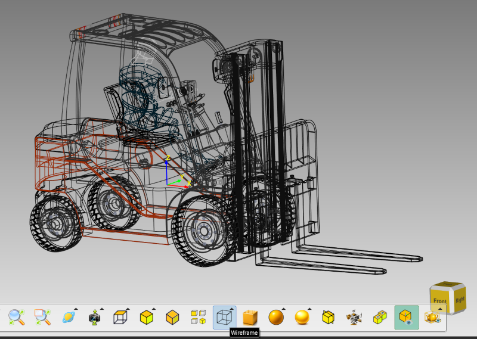
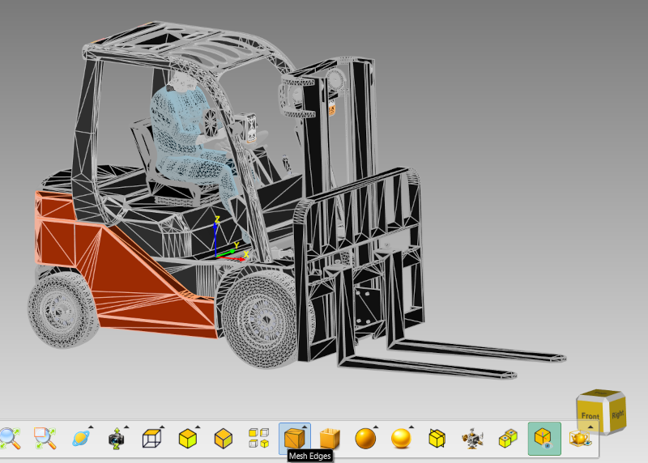
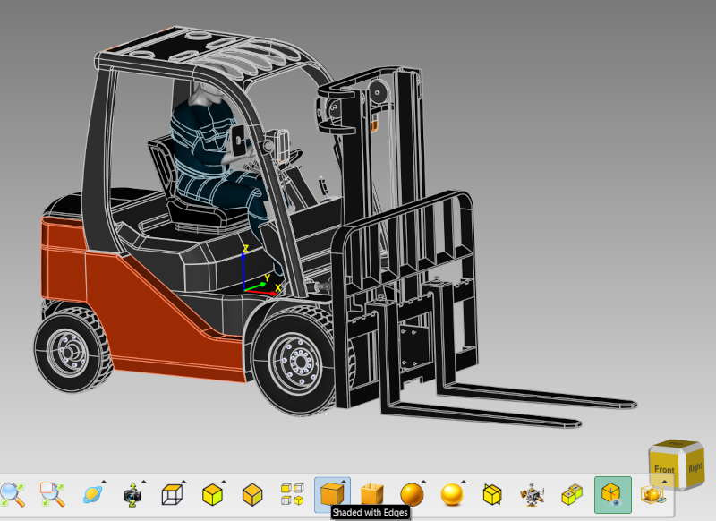
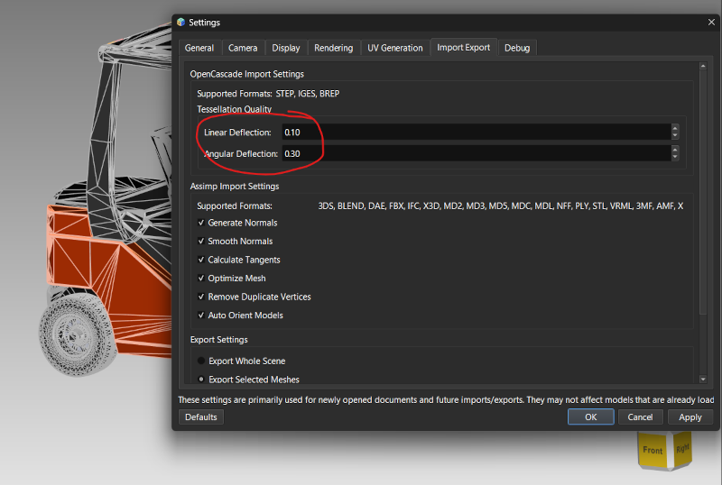

Lesson 18: Edge & Wireframe Rendering
Introduction
For CAD formats like STEP, IGES, and BREP, ModelViewer can extract and render true B-Rep (boundary representation) edges — the sharp, precise curves that define a solid's faces — separately from the triangulated mesh used for shading. This gives you crisp edge lines that stay accurate regardless of the mesh's tessellation density.
Display Modes with Edges
Three display modes show edges (set from the display mode toolbar/menu, see Lesson 7):
- Wireframe: Shows only true feature edges (crease/boundary edges, or B-Rep edges for CAD formats), with faces not shaded at all.
- Mesh Edges: Shows normally shaded faces with every triangle edge overlaid, revealing the full underlying tessellation density.
- Shaded with Edges: Shows normally shaded/lit faces with only the true feature edges overlaid — a cleaner look than Mesh Edges since it skips the dense per-triangle lines.

A STEP model in Wireframe display mode showing clean B-Rep edge lines with no fill
The same model in Mesh Edges mode, showing shaded faces with every triangle edge
The same model in Shaded with Edges mode, combining shading and clean feature-edge linesControlling Tessellation Quality
Edge and face precision for CAD imports is controlled by two deflection settings in Edit → Settings → Import/Export:

Settings dialog showing Linear Deflection and Angular Deflection controlsSaving Edge Data
Extracted B-Rep edges are cached with the mesh once computed, and are preserved when saving to an .mvf session file — so reloading a saved session doesn't require re-extracting edges from the original CAD file.
You've completed the full tutorial! You now have a comprehensive understanding of ModelViewer, from basic navigation through advanced CAD-specific rendering features.